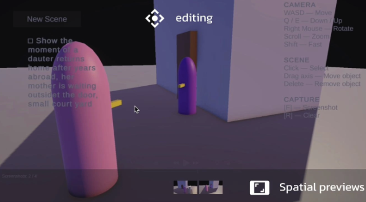
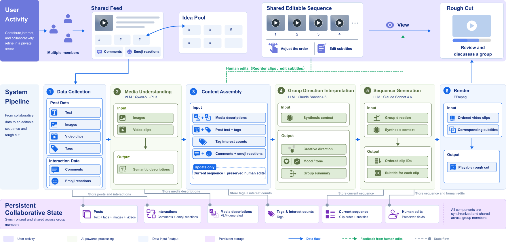
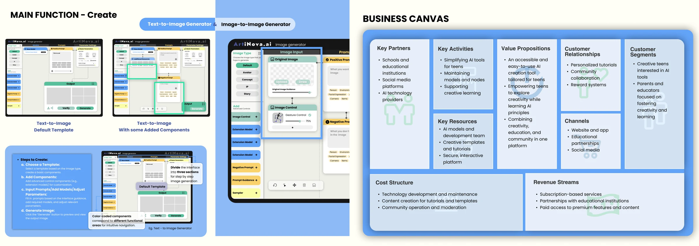

Direct spatial control for AI video creation
Yutong Alison Mei*, Wei Cai** Equal contribution
A narrative prompt becomes an editable 3D scene. Creators position characters and adjust the camera before using the layout to guide video generation.
In a 10-person study, 8 preferred spatial editing to text-only prompting.

CoTok
Submitted to CHI 2027 · Under review
Collaborative Creativity in Short-Video Creation by Leveraging Features Inspired by Social Media
Wei Cai, Ziyao Xiong, Xiao Luo, Xukun Jin, Ray LC†† Research advisor
Project details are confidential. Further information is available upon request.

Serious GameVR2023
Players touch a virtual plant, explore its environment, and use breathing input to encounter pollution through visual and physical feedback.

Serious GameVR2023
Players move between bystander and victim perspectives, with choices shaping the next experience. The prototype supports a guided workshop and reflection.

Embodied InteractionMusic2023
Camera-based pose tracking maps hand and leg movement to pitch. An iterative prototype explores how participants can move, listen, and adjust.

Creativity SupportAI & Learning2024
Templates and modular controls guide learners from a simple starting point toward more deliberate image generation. The interface brings prompts, image inputs, and learning resources into one workflow.


.png)